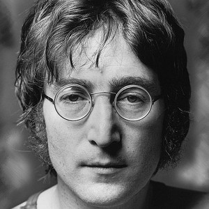

John Ono Lennon MBE (legally John Winston Ono Lennon; born John Winston Lennon; 9 October 1940 – 8 December 1980) was an English singer, songwriter, and peace activist[1] who co-founded the Beatles, the most commercially successful band in the history of popular music. He and fellow member Paul McCartney formed a much-celebrated songwriting partnership. Along with George Harrison and Ringo Starr, the group would ascend to world-wide fame during the 1960s.
